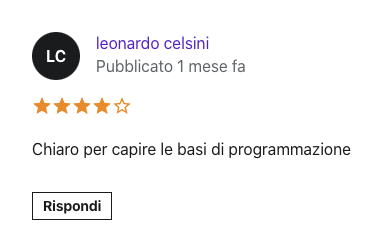

Cosa ne pensano i nostri studenti?


Studenti iscritti ai nostri corsi
+285
I-TEC-AM (Intelligence Technologies by Antonio Margio) è un azienda di Sviluppo Web fondata nel luglio 2021 che insegna ai giovani, e chiunque avesse voglia di apprendere nuove conoscenze in ambito informatico, le basi dello Sviluppo Web tramite corsi online.
+285